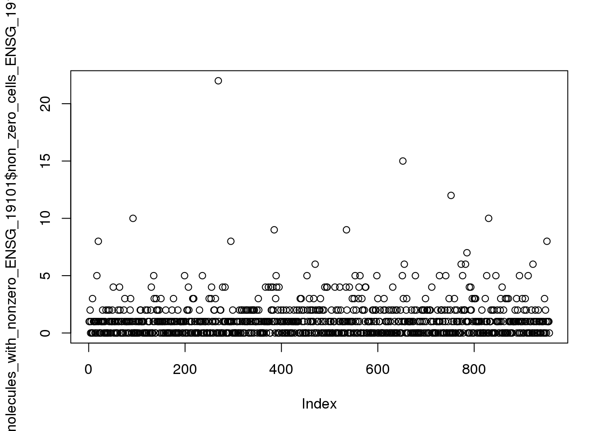
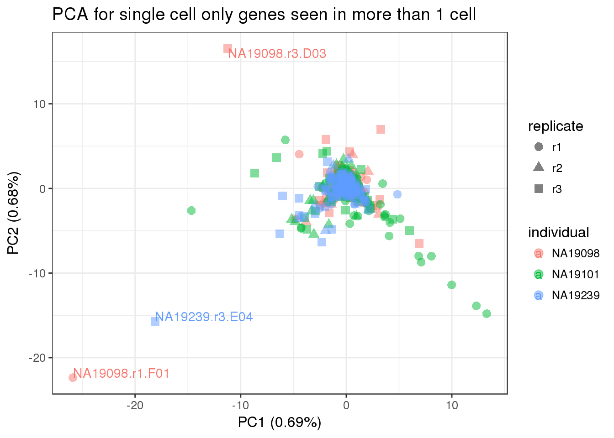

Look at single cell only genes by individual
Briana Mittleman
2017/03/03
Last updated: 2017-03-06
Code version: f3c5dc0
Pull in genes lists
library("biomaRt")
library("data.table")
library("testit")
library("dplyr")
library("edgeR")
library("VennDiagram")
library("ggplot2")
theme_set(theme_bw(base_size = 12))
source("../../singleCellSeq/analysis/functions.R")
require(Humanzee)
library("GOstats")anno <- read.table("../../singleCellSeq/data/annotation.txt", header = TRUE,
stringsAsFactors = FALSE)
#input reads (pre-filter)
reads <- read.table("../../singleCellSeq/data/reads.txt", header = TRUE,
stringsAsFactors = FALSE)
#input molecule (pre-filter)
molecules <- read.table("../../singleCellSeq/data/molecules.txt", header = TRUE,
stringsAsFactors = FALSE)
#input bulk reads (pre-filter )
reads_bulk <- read.table("../../singleCellSeq/data/reads-bulk.txt", header = TRUE, stringsAsFactors = FALSE)Create vectors with the list of genes in each set.
genes_observed_reads_bulk <- rownames(reads_bulk)[rowSums(reads_bulk) > 0]
genes_observed_reads_bulk_ENSG= genes_observed_reads_bulk[grep("ERCC", genes_observed_reads_bulk, invert = TRUE)]
genes_observed_reads <- rownames(reads)[rowSums(reads) > 0]
genes_observed_molecules <- rownames(molecules)[rowSums(molecules) > 0]
genes_observed_molecules_ENSG <- genes_observed_molecules[grep("ERCC", genes_observed_molecules, invert = TRUE)]Genes only in single cell molecules
gene_onlysinglecell_ENSG <- setdiff(genes_observed_molecules_ENSG,genes_observed_reads_bulk_ENSG)
#subset molecules by these genes
molecules_df= data.frame(molecules)
molecules_only_SC_ENSG <- molecules_df[rownames(molecules_df) %in% gene_onlysinglecell_ENSG,]
dim(molecules_only_SC_ENSG)[1] 956 864Count number of cells we see these genes in
non_zero_cells_ENSG <- apply(molecules_only_SC_ENSG, 1, function(c)sum(c!=0))
molecules_with_nonzero_ENSG <- cbind(molecules_only_SC_ENSG, non_zero_cells_ENSG)
summary(molecules_with_nonzero_ENSG$non_zero_cells_ENSG) Min. 1st Qu. Median Mean 3rd Qu. Max.
1.000 1.000 2.000 2.899 3.000 45.000 Individual level analysis
Individual 19098
molecules_SC_ENSG_19098= molecules_with_nonzero_ENSG[,grep("19098", colnames(molecules_with_nonzero_ENSG))]
# this is a dataframe for the sc only genes in 19098
dim(molecules_SC_ENSG_19098)[1] 956 288non_zero_cells_ENSG_19098 <- apply(molecules_SC_ENSG_19098, 1, function(c)sum(c!=0))
molecules_with_nonzero_ENSG_19098 <- cbind(molecules_SC_ENSG_19098, non_zero_cells_ENSG_19098)
summary(molecules_with_nonzero_ENSG_19098$non_zero_cells_ENSG_19098) Min. 1st Qu. Median Mean 3rd Qu. Max.
0.0000 0.0000 1.0000 0.8923 1.0000 13.0000 plot(molecules_with_nonzero_ENSG_19098$non_zero_cells_ENSG_19098)Individual 19101
molecules_SC_ENSG_19101= molecules_with_nonzero_ENSG[,grep("19101", colnames(molecules_with_nonzero_ENSG))]
# this is a dataframe for the sc only genes in 19101
dim(molecules_SC_ENSG_19101)[1] 956 288non_zero_cells_ENSG_19101 <- apply(molecules_SC_ENSG_19101, 1, function(c)sum(c!=0))
molecules_with_nonzero_ENSG_19101 <- cbind(molecules_SC_ENSG_19101, non_zero_cells_ENSG_19101)
summary(molecules_with_nonzero_ENSG_19101$non_zero_cells_ENSG_19101) Min. 1st Qu. Median Mean 3rd Qu. Max.
0.000 0.000 1.000 1.124 2.000 22.000 plot(molecules_with_nonzero_ENSG_19101$non_zero_cells_ENSG_19101)
Individual 19239
molecules_SC_ENSG_19239= molecules_with_nonzero_ENSG[,grep("19239", colnames(molecules_with_nonzero_ENSG))]
# this is a dataframe for the sc only genes in 19239
dim(molecules_SC_ENSG_19239)[1] 956 288non_zero_cells_ENSG_19239 <- apply(molecules_SC_ENSG_19239, 1, function(c)sum(c!=0))
molecules_with_nonzero_ENSG_19239 <- cbind(molecules_SC_ENSG_19239, non_zero_cells_ENSG_19239)
summary(molecules_with_nonzero_ENSG_19239$non_zero_cells_ENSG_19239) Min. 1st Qu. Median Mean 3rd Qu. Max.
0.0000 0.0000 0.0000 0.8818 1.0000 34.0000 plot(molecules_with_nonzero_ENSG_19239$non_zero_cells_ENSG_19239)
Compare individuals
I want to look at the genes that are expressed in these individuals and see if there are genes that are unique to one individual
find genes with non_zero > 1 (exclude singleton)
make a list of these genes
create a ven diagram with these genes
#19098
genes_not_singleton_19098= row.names(molecules_with_nonzero_ENSG_19098[molecules_with_nonzero_ENSG_19098$non_zero_cells_ENSG_19098 > 1, ])
length(genes_not_singleton_19098)[1] 181#19101
genes_not_singleton_19101= row.names(molecules_with_nonzero_ENSG_19101[molecules_with_nonzero_ENSG_19101$non_zero_cells_ENSG_19101 > 1, ])
length(genes_not_singleton_19101)[1] 241#19239
genes_not_singleton_19239= row.names(molecules_with_nonzero_ENSG_19239[molecules_with_nonzero_ENSG_19239$non_zero_cells_ENSG_19239 > 1, ])
length(genes_not_singleton_19239)[1] 168non_sing_venn <- venn.diagram(x = list("19098" = genes_not_singleton_19098,
"19101" = genes_not_singleton_19101,
"19239" = genes_not_singleton_19239),
filename = NULL, euler.d = FALSE, scaled = FALSE)
grid.newpage()
grid.draw(non_sing_venn)
Replicate level analysis
19098
R1
molecules_SC_ENSG_19098.R1= molecules_with_nonzero_ENSG_19098[,grep("r1", colnames(molecules_with_nonzero_ENSG_19098))]
non_zero_cells_ENSG_19098.R1 <- apply(molecules_SC_ENSG_19098.R1, 1, function(c)sum(c!=0))
molecules_with_nonzero_ENSG_19098.R1 <- cbind(molecules_SC_ENSG_19098.R1, non_zero_cells_ENSG_19098.R1)
genes_not_singleton_19098.R1= row.names(molecules_with_nonzero_ENSG_19098.R1[molecules_with_nonzero_ENSG_19098.R1$non_zero_cells_ENSG_19098.R1 > 1, ])
length(genes_not_singleton_19098.R1)[1] 45R2
molecules_SC_ENSG_19098.R2= molecules_with_nonzero_ENSG_19098[,grep("r2", colnames(molecules_with_nonzero_ENSG_19098))]
non_zero_cells_ENSG_19098.R2 <- apply(molecules_SC_ENSG_19098.R2, 1, function(c)sum(c!=0))
molecules_with_nonzero_ENSG_19098.R2 <- cbind(molecules_SC_ENSG_19098.R2, non_zero_cells_ENSG_19098.R2)
genes_not_singleton_19098.R2= row.names(molecules_with_nonzero_ENSG_19098.R2[molecules_with_nonzero_ENSG_19098.R2$non_zero_cells_ENSG_19098.R2 > 1, ])
length(genes_not_singleton_19098.R2)[1] 28R3
molecules_SC_ENSG_19098.R3= molecules_with_nonzero_ENSG_19098[,grep("r3", colnames(molecules_with_nonzero_ENSG_19098))]
non_zero_cells_ENSG_19098.R3 <- apply(molecules_SC_ENSG_19098.R3, 1, function(c)sum(c!=0))
molecules_with_nonzero_ENSG_19098.R3 <- cbind(molecules_SC_ENSG_19098.R3, non_zero_cells_ENSG_19098.R3)
genes_not_singleton_19098.R3= row.names(molecules_with_nonzero_ENSG_19098.R3[molecules_with_nonzero_ENSG_19098.R3$non_zero_cells_ENSG_19098.R3 > 1, ])
length(genes_not_singleton_19098.R3)[1] 46Create ven diagram
non_sing_venn_19098 <- venn.diagram(x = list("R1" = genes_not_singleton_19098.R1,
"R2" = genes_not_singleton_19098.R2,
"R3" = genes_not_singleton_19098.R3),
filename = NULL, euler.d = FALSE, scaled = FALSE)
grid.newpage()
grid.draw(non_sing_venn_19098)19101
R1
molecules_SC_ENSG_19101.R1= molecules_with_nonzero_ENSG_19101[,grep("r1", colnames(molecules_with_nonzero_ENSG_19101))]
non_zero_cells_ENSG_19101.R1 <- apply(molecules_SC_ENSG_19101.R1, 1, function(c)sum(c!=0))
molecules_with_nonzero_ENSG_19101.R1 <- cbind(molecules_SC_ENSG_19101.R1, non_zero_cells_ENSG_19101.R1)
genes_not_singleton_19101.R1= row.names(molecules_with_nonzero_ENSG_19101.R1[molecules_with_nonzero_ENSG_19101.R1$non_zero_cells_ENSG_19101.R1 > 1, ])
length(genes_not_singleton_19101.R1)[1] 87R2
molecules_SC_ENSG_19101.R2= molecules_with_nonzero_ENSG_19101[,grep("r2", colnames(molecules_with_nonzero_ENSG_19101))]
non_zero_cells_ENSG_19101.R2 <- apply(molecules_SC_ENSG_19101.R2, 1, function(c)sum(c!=0))
molecules_with_nonzero_ENSG_19101.R2 <- cbind(molecules_SC_ENSG_19101.R2, non_zero_cells_ENSG_19101.R2)
genes_not_singleton_19101.R2= row.names(molecules_with_nonzero_ENSG_19101.R2[molecules_with_nonzero_ENSG_19101.R2$non_zero_cells_ENSG_19101.R2 > 1, ])
length(genes_not_singleton_19101.R2)[1] 59R3
molecules_SC_ENSG_19101.R3= molecules_with_nonzero_ENSG_19101[,grep("r3", colnames(molecules_with_nonzero_ENSG_19101))]
non_zero_cells_ENSG_19101.R3 <- apply(molecules_SC_ENSG_19101.R3, 1, function(c)sum(c!=0))
molecules_with_nonzero_ENSG_19101.R3 <- cbind(molecules_SC_ENSG_19101.R3, non_zero_cells_ENSG_19101.R3)
genes_not_singleton_19101.R3= row.names(molecules_with_nonzero_ENSG_19101.R3[molecules_with_nonzero_ENSG_19101.R3$non_zero_cells_ENSG_19101.R3 > 1, ])
length(genes_not_singleton_19101.R3)[1] 42Create ven diagram
non_sing_venn_19101 <- venn.diagram(x = list("R1" = genes_not_singleton_19101.R1,
"R2" = genes_not_singleton_19101.R2,
"R3" = genes_not_singleton_19101.R3),
filename = NULL, euler.d = FALSE, scaled = FALSE)
grid.newpage()
grid.draw(non_sing_venn_19101)19239
R1
molecules_SC_ENSG_19239.R1= molecules_with_nonzero_ENSG_19239[,grep("r1", colnames(molecules_with_nonzero_ENSG_19239))]
non_zero_cells_ENSG_19239.R1 <- apply(molecules_SC_ENSG_19239.R1, 1, function(c)sum(c!=0))
molecules_with_nonzero_ENSG_19239.R1 <- cbind(molecules_SC_ENSG_19239.R1, non_zero_cells_ENSG_19239.R1)
genes_not_singleton_19239.R1= row.names(molecules_with_nonzero_ENSG_19239.R1[molecules_with_nonzero_ENSG_19239.R1$non_zero_cells_ENSG_19239.R1 > 1, ])
length(genes_not_singleton_19239.R1)[1] 43R2
molecules_SC_ENSG_19239.R2= molecules_with_nonzero_ENSG_19239[,grep("r2", colnames(molecules_with_nonzero_ENSG_19239))]
non_zero_cells_ENSG_19239.R2 <- apply(molecules_SC_ENSG_19239.R2, 1, function(c)sum(c!=0))
molecules_with_nonzero_ENSG_19239.R2 <- cbind(molecules_SC_ENSG_19239.R2, non_zero_cells_ENSG_19239.R2)
genes_not_singleton_19239.R2= row.names(molecules_with_nonzero_ENSG_19239.R2[molecules_with_nonzero_ENSG_19239.R2$non_zero_cells_ENSG_19239.R2 > 1, ])
length(genes_not_singleton_19239.R2)[1] 43R3
molecules_SC_ENSG_19239.R3= molecules_with_nonzero_ENSG_19239[,grep("r3", colnames(molecules_with_nonzero_ENSG_19239))]
non_zero_cells_ENSG_19239.R3 <- apply(molecules_SC_ENSG_19239.R3, 1, function(c)sum(c!=0))
molecules_with_nonzero_ENSG_19239.R3 <- cbind(molecules_SC_ENSG_19239.R3, non_zero_cells_ENSG_19239.R3)
genes_not_singleton_19239.R3= row.names(molecules_with_nonzero_ENSG_19239.R3[molecules_with_nonzero_ENSG_19239.R3$non_zero_cells_ENSG_19239.R3 > 1, ])
length(genes_not_singleton_19239.R3)[1] 48Create ven diagram
non_sing_venn_19239<- venn.diagram(x = list("R1" = genes_not_singleton_19239.R1,
"R2" = genes_not_singleton_19239.R2,
"R3" = genes_not_singleton_19239.R3),
filename = NULL, euler.d = FALSE, scaled = FALSE)
grid.newpage()
grid.draw(non_sing_venn_19239)<<<<<<< HEAD
PCA for SC only genes
pca_SConly <- run_pca(molecules_only_SC_ENSG )
pca_SConly_plot <- plot_pca(pca_SConly$PCs, explained = pca_SConly$explained,
metadata = anno, color = "individual",
shape = "replicate", alpha = 0.5, size = 3) +
labs(title="PCA for single cell only genes") +
geom_text(aes(label= ifelse(PC1 < -60 | PC2 >40,colnames(molecules_only_SC_ENSG), "") , vjust="inward", hjust="inward"))
pca_SConly_plot The green one is NA19101.r1.C11 and the red one is NA19098.r1.F01
The green one is NA19101.r1.C11 and the red one is NA19098.r1.F01
Check if these cells passes the quality control steps in the original analysis.
quality_single_cells <- scan("../../singleCellSeq//data/quality-single-cells.txt",
what = "character")
green_cell= c("NA19101.r1.C11")
red_cell=c("NA19098.r1.F01")
green_cell %in% quality_single_cells[1] TRUEred_cell %in% quality_single_cells[1] FALSECell NA19101.r1.C11 is in the list of quality cells. Cell NA19098.r1.F01 was not included in the quality cells.
Exclude singletons
#ENSG genes that arnt singleton in single cell only
load("../data/gene_names_ensg.txt")
#subset molecules for this
molecules_sc_notsing_ENSG= molecules[rownames(molecules) %in% gene_names_ensg, ]run and plot PCA
pca_SConly_nonsing <- run_pca(molecules_sc_notsing_ENSG)
pca_SConly_nonsing_plot <- plot_pca(pca_SConly_nonsing$PCs, explained = pca_SConly_nonsing$explained,
metadata = anno, color = "individual",
shape = "replicate", alpha = 0.5, size = 3) +
labs(title="PCA for single cell only genes seen in more than 1 cell") +
geom_text(aes(label= ifelse(PC1 < -15 | PC2 >10,colnames(molecules_only_SC_ENSG), "") , vjust="inward", hjust="inward"))
pca_SConly_nonsing_plot 
======= ## Session information
sessionInfo()R version 3.3.2 (2016-10-31)
Platform: x86_64-redhat-linux-gnu (64-bit)
Running under: Scientific Linux 7.2 (Nitrogen)
locale:
[1] LC_CTYPE=en_US.UTF-8 LC_NUMERIC=C
[3] LC_TIME=en_US.UTF-8 LC_COLLATE=en_US.UTF-8
[5] LC_MONETARY=en_US.UTF-8 LC_MESSAGES=en_US.UTF-8
[7] LC_PAPER=en_US.UTF-8 LC_NAME=C
[9] LC_ADDRESS=C LC_TELEPHONE=C
[11] LC_MEASUREMENT=en_US.UTF-8 LC_IDENTIFICATION=C
attached base packages:
[1] parallel stats4 grid stats graphics grDevices utils
[8] datasets methods base
other attached packages:
[1] mygene_1.10.0 GenomicFeatures_1.26.3 GenomicRanges_1.26.3
[4] GenomeInfoDb_1.10.3 broman_0.65-1 gplots_3.0.1
[7] matrixStats_0.51.0 MASS_7.3-45 gridExtra_2.2.1
[10] lme4_1.1-12 workflowr_0.4.0 org.Hs.eg.db_3.4.0
[13] GOstats_2.40.0 graph_1.52.0 Category_2.40.0
[16] Matrix_1.2-7.1 GO.db_3.4.0 AnnotationDbi_1.36.2
[19] IRanges_2.8.1 S4Vectors_0.12.1 Biobase_2.34.0
[22] BiocGenerics_0.20.0 Humanzee_0.1.0 sva_3.22.0
[25] genefilter_1.56.0 mgcv_1.8-15 nlme_3.1-128
[28] BiocInstaller_1.24.0 scales_0.4.1 VennDiagram_1.6.17
[31] futile.logger_1.4.3 edgeR_3.16.5 limma_3.30.11
[34] dplyr_0.5.0 testit_0.6 data.table_1.10.4
[37] biomaRt_2.30.0 cowplot_0.7.0 stringr_1.2.0
[40] reshape2_1.4.2 rmarkdown_1.3 Citrus_0.99
[43] easyGgplot2_1.0.0.9000 ggplot2_2.2.1
loaded via a namespace (and not attached):
[1] minqa_1.2.4 colorspace_1.3-2
[3] rprojroot_1.2 htmlTable_1.9
[5] XVector_0.14.0 base64enc_0.1-3
[7] rstudioapi_0.6 sqldf_0.4-10
[9] splines_3.3.2 knitr_1.15.1
[11] Formula_1.2-1 jsonlite_1.3
[13] nloptr_1.0.4 Rsamtools_1.26.1
[15] annotate_1.52.1 cluster_2.0.5
[17] httr_1.2.1 backports_1.0.5
[19] assertthat_0.1 lazyeval_0.2.0
[21] acepack_1.4.1 htmltools_0.3.5
[23] tools_3.3.2 gtable_0.2.0
[25] Rcpp_0.12.9 Biostrings_2.42.1
[27] gdata_2.17.0 rtracklayer_1.34.2
[29] proto_1.0.0 gtools_3.5.0
[31] devtools_1.12.0 statmod_1.4.29
[33] XML_3.98-1.5 zlibbioc_1.20.0
[35] SummarizedExperiment_1.4.0 RBGL_1.50.0
[37] lambda.r_1.1.9 RColorBrewer_1.1-2
[39] yaml_2.1.14 curl_2.3
[41] memoise_1.0.0 rpart_4.1-10
[43] latticeExtra_0.6-28 stringi_1.1.2
[45] RSQLite_1.1-2 checkmate_1.8.2
[47] caTools_1.17.1 BiocParallel_1.8.1
[49] chron_2.3-50 bitops_1.0-6
[51] evaluate_0.10 lattice_0.20-34
[53] htmlwidgets_0.8 GenomicAlignments_1.10.0
[55] labeling_0.3 GSEABase_1.36.0
[57] AnnotationForge_1.16.1 plyr_1.8.4
[59] magrittr_1.5 R6_2.2.0
[61] Hmisc_4.0-2 DBI_0.5-1
[63] gsubfn_0.6-6 foreign_0.8-67
[65] withr_1.0.2 survival_2.40-1
[67] RCurl_1.95-4.8 nnet_7.3-12
[69] tibble_1.2 futile.options_1.0.0
[71] KernSmooth_2.23-15 locfit_1.5-9.1
[73] git2r_0.18.0 digest_0.6.12
[75] xtable_1.8-2 munsell_0.4.3 86594a472ae2f2872b38459580b5cf8e13b8b533
This site was created with R Markdown